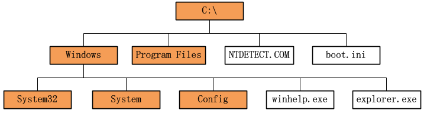
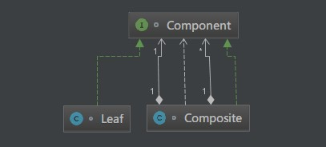
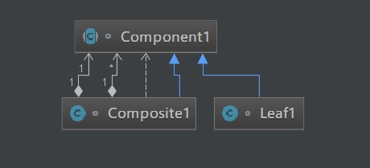
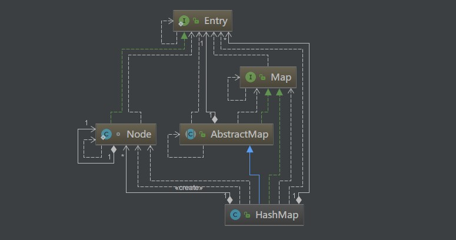

原文出处:本文由博客园博主知了一笑提供。
原文连接:https://www.cnblogs.com/cicada-smile/p/11450841.html
原文连接:https://www.cnblogs.com/cicada-smile/p/11450841.html
本文源码：GitHub·点这里 || GitEE·点这里
一、生活场景
1、文件系统
下图是常见的计算机文件系统的一部分。

文件系统是一个树结构，树上长有节点。树的节点有两种:
- 树枝节点
即文件夹，有内部树结构，在图中涂有颜色；
- 树叶节点
另一种是文件，即树叶节点，没有内部树结构。
2、打印文件树结构
public class C01_InScene {
public static void main(String[] args) {
File file = new File("F:\\tree") ;
fileTree(file, 0);
}
private static void fileTree(File file, int floor) {
// 判断是否存在
if (file.exists()) {
if (floor > 0) {
// 循环打空格
for (int i = 0; i < floor; i++) {
System.out.print(" ");
}
}
if (file.isDirectory()) {
System.out.println("+" + file.getName());
// 列出所有文件及文件夹
File[] files = file.listFiles();
if (null != files) {
// 循环递归
for (File dirFile : files) {
fileTree(dirFile, floor + 1);
}
}
} else {
System.out.println("-" + file.getName());
}
}
}
}执行效果：+代表文件夹，-代表文件。
+tree
+dir1
+dir2
-dir2Leaf.txt
-leaf1.txt
-leaf2.txt
-OneLeaf.txt
-TwoLeaf.txt3、组合模式描述
组合模式属于对象的结构模式，有时又叫做“部分——整体”模式。组合模式将对象组织到树结构中，可以用来描述整体与部分的关系。组合模式可以使客户端将单纯元素与复合元素同等看待。
二、组合模式-安全式
1、基础概念
安全式的组合模式要求管理聚集的方法只出现在树枝构件类中，而不出现在树叶构件类中。涉及到三个角色：
- 抽象构件(Component)角色
它给组合的对象定义出公共的接口及其默认行为，可以用来管理所有的子对象。组合对象通常把它所包含的子对象当做类型为Component的对象。在安全式的组合模式里，构件角色并不定义出管理子对象的方法，这一定义由树枝构件对象给出。
- 树叶构件(Leaf)角色
树叶对象是没有下级子对象的对象，定义出参加组合的原始对象的行为。
- 树枝构件(Composite)角色
代表参加组合的有下级子对象的对象。树枝构件类给出所有的管理子对象的方法，如add()、remove()以及getChild()。
2、模式图解

3、源代码实现
public class C02_Security_Model {
public static void main(String[] args) {
Composite root = new Composite("服装");
Composite composite1 = new Composite("男装");
Leaf manCoat = new Leaf("上衣");
Leaf manBottom = new Leaf("下衣");
composite1.addChild(manCoat);
composite1.addChild(manBottom);
Composite composite2 = new Composite("女装");
Leaf leaf1 = new Leaf("鞋子");
Leaf leaf2 = new Leaf("帽子");
root.addChild(leaf1);
root.addChild(leaf2);
root.addChild(composite1);
root.addChild(composite2);
root.printStruct("");
}
}
// 抽象构件角色类
interface Component {
/*
* 输出组件自身的名称
*/
void printStruct(String preStr);
}
// 树枝构件角色类
class Composite implements Component{
// 用来存储组合对象中包含的子组件对象
private List<Component> childComponents = new ArrayList<Component>();
// 输出对象的名称
private String name;
// 构造方法，传入组合对象的名字
public Composite (String name){
this.name = name;
}
/**
* 聚集管理方法，增加一个子构件对象
* @param child 子构件对象
*/
public void addChild(Component child){
childComponents.add(child);
}
/**
* 聚集管理方法，删除一个子构件对象
* @param index 子构件对象的下标
*/
public void removeChild(int index){
childComponents.remove(index);
}
/**
* 聚集管理方法，返回所有子构件对象
*/
public List getChild(){
return childComponents ;
}
/**
* 输出对象的自身结构
* @param preStr 前缀，主要是按照层级拼接空格，实现向后缩进
*/
@Override
public void printStruct(String preStr) {
//先输出自己
System.out.println(preStr+"+"+this.name);
//如果还包含有子组件，那么就输出这些子组件对象
if (this.childComponents != null){
//添加两个空格，表示向后缩进两个空格
preStr = preStr+" ";
//输出当前的子对象:使用函数递归的原理
for (Component c : childComponents) {
c.printStruct(preStr);
}
}
}
}
class Leaf implements Component{
// 输出叶子对象的名称
private String name;
// 构造方法，传入叶子对象的名称
public Leaf (String name){
this.name = name ;
}
/**
* 输出叶子对象的结构，叶子对象没有子对象，也就是输出叶子对象的名字
* @param preStr 前缀，主要是按照层级拼接的空格，实现向后缩进
*/
@Override
public void printStruct(String preStr) {
System.out.println(preStr+"-"+name);
}
}- 输出结果
+服装
-鞋子
-帽子
+男装
-上衣
-下衣
+女装三、组合模式-透明式
1、概念图解
与安全式的组合模式不同的是，透明式的组合模式要求所有的具体构件类，不论树枝构件还是树叶构件，均符合一个固定接口。

2、源代码实现
public class C03_Transparent_Model {
public static void main(String[] args) {
Component1 root = new Composite1("服装");
Component1 c1 = new Composite1("男装");
Component1 c2 = new Composite1("女装");
Component1 leaf1 = new Leaf1("衬衫");
Component1 leaf2 = new Leaf1("夹克");
Component1 leaf3 = new Leaf1("裙子");
Component1 leaf4 = new Leaf1("套装");
root.addChild(c1);
root.addChild(c2);
c1.addChild(leaf1);
c1.addChild(leaf2);
c2.addChild(leaf3);
c2.addChild(leaf4);
root.printStruct("");
}
}
abstract class Component1 {
/**
* 输出组件自身的名称
*/
public abstract void printStruct(String preStr);
// 聚集管理方法，增加一个子构件对象
public void addChild(Component1 child){
/**
* 缺省实现，抛出异常，因为叶子对象没有此功能
* 或者子组件没有实现这个功能
*/
throw new UnsupportedOperationException("对象不支持此功能");
}
// 聚集管理方法，删除一个子构件对象
public void removeChild(int index){
/**
* 缺省实现，抛出异常，因为叶子对象没有此功能
* 或者子组件没有实现这个功能
*/
throw new UnsupportedOperationException("对象不支持此功能");
}
// 聚集管理方法，返回所有子构件对象
public List<Component1> getChild(){
/**
* 缺省实现，抛出异常，因为叶子对象没有此功能
* 或者子组件没有实现这个功能
*/
throw new UnsupportedOperationException("对象不支持此功能");
}
}
class Composite1 extends Component1 {
// 用来存储组合对象中包含的子组件对象
private List<Component1> childComponents = new ArrayList<Component1>();
// 输出对象名称
private String name ;
public Composite1 (String name){
this.name = name;
}
/**
* 聚集管理方法，增加一个子构件对象
* @param child 子构件对象
*/
public void addChild(Component1 child){
childComponents.add(child);
}
/**
* 聚集管理方法，删除一个子构件对象
* @param index 子构件对象的下标
*/
public void removeChild(int index){
childComponents.remove(index);
}
// 聚集管理方法，返回所有子构件对象
public List<Component1> getChild(){
return childComponents ;
}
/**
* 输出对象的自身结构
* @param preStr 前缀，主要是按照层级拼接空格，实现向后缩进
*/
@Override
public void printStruct(String preStr) {
// 首先输出自己名称
System.out.println(preStr+"+"+this.name);
// 如果还包含有子组件，那么就输出这些子组件对象
preStr = preStr + " ";
if (this.childComponents != null) {
// 添加两个空格,表示向后缩进
for (Component1 c : childComponents) {
////递归输出每个子对象
c.printStruct(preStr);
}
}
}
}
class Leaf1 extends Component1 {
private String name;
public Leaf1 (String name){
this.name = name;
}
/**
* 输出叶子对象的结构，叶子对象没有子对象，也就是输出叶子对象的名字
* @param preStr 前缀，主要是按照层级拼接的空格，实现向后缩进
*/
@Override
public void printStruct(String preStr) {
System.out.println(preStr+"-"+name);
}
}四、JDK中应用
1、HashMap结构图

2、分层结构
- interface Map
- class AbstractMap implements Map
- HashMap extends AbstractMap implements Map
- interface Map.Entry
- Node implements Map.Entry
3、源代码
- 存储叶子节点
public V put(K var1, V var2) {
return this.putVal(hash(var1), var1, var2, false, true);
}
final V putVal(int var1, K var2, V var3, boolean var4, boolean var5) {
HashMap.Node[] var6 = this.table;
.......
}- 存储树枝节点
public void putAll(Map<? extends K, ? extends V> var1) {
this.putMapEntries(var1, true);
}五、源代码地址
GitHub·地址
https://github.com/cicadasmile/model-arithmetic-parent
GitEE·地址
https://gitee.com/cicadasmile/model-arithmetic-parent：组合模式4.png)